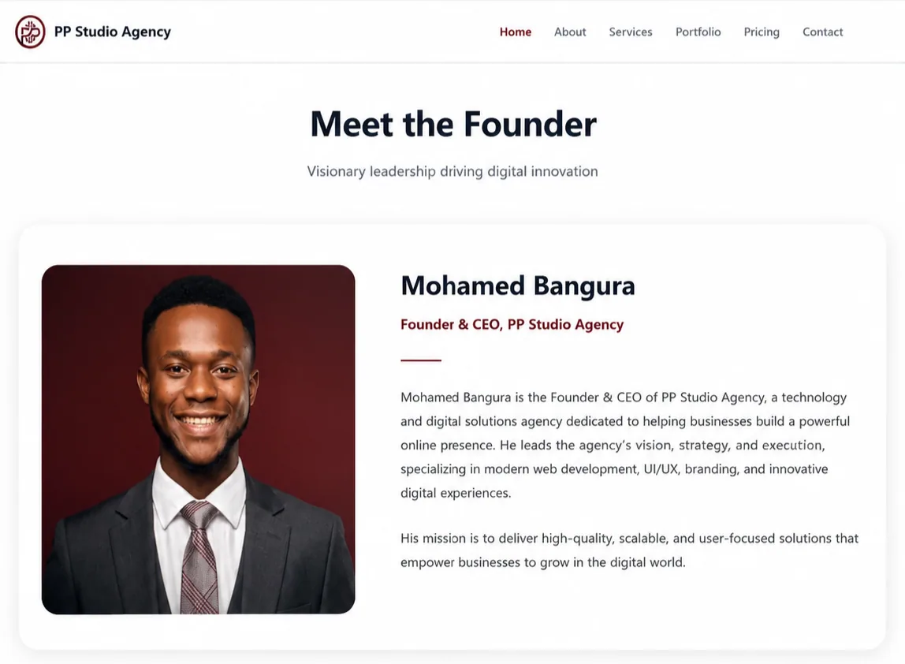

Case study 02 · Digital agency
PP Studio Agency
A six-page site for a digital creative agency. The interesting problem here was consistency: six pages, two visual themes and one accent colour, held together by a single design system rather than six separate sets of rules.

Project overview
PP Studio Agency is a brand site for a digital creative agency, built as six static pages: home, about, services, portfolio, pricing and contact. It presents four service lines — website development, graphic design, promotional video and social media management — and gives a prospective client everything they need in one place, including what the packages cost.
The site is deployed and live, with the source published.
Purpose and intended audience
The audience is a business owner comparing agencies. They arrive from a link, skim for a few seconds, and want to know three things: what this agency does, roughly what it costs, and how to start a conversation.
- Services get their own page, so an agency’s capabilities can be described properly instead of squeezed into a homepage grid.
- A pricing page exists, which removes the most common reason a prospect leaves without enquiring: not knowing whether the budget is even in range.
- Portfolio pages show the work with links out to live examples, so claims can be checked rather than taken on trust.
- Contact and FAQ sit together, answering the practical questions — timelines, revisions, what is included — before a form is filled in.
My role and responsibilities
I built the entire front end: page structure, the design system, all responsive behaviour, the JavaScript interactions, the image pipeline and the SEO configuration for all six pages.
Technical approach
- A single accent colour drives the whole brand. One burgundy value is used for links, buttons, borders and highlights, defined once and inherited everywhere. Adding a new section means reusing tokens, not choosing new colours.
- Light‑dark hybrid theme. The hero, footer and closing call to action use dark surfaces; the body sections stay light. This creates rhythm down a long page and makes the calls to action unmistakable, without needing a second colour scheme.
- Custom properties for the design system. Spacing, colour, radii and type scale live in
:root, so the whole site can be re-themed from one block of CSS. - Layouts built with CSS Grid and Flexbox — Grid for the page-level structure and service matrices, Flexbox for component-level alignment.
- Breakpoints in a dedicated file.
responsive.cssholds the 1024 px, 768 px, 576 px and 400 px steps, separate from the base styles. - Typeface pairing of Inter for body copy and Space Grotesk for headings — a clear distinction between reading text and navigating the page.
Key features and design decisions
- Keyboard-accessible FAQ accordion. Each item is operable from the keyboard and wired up with ARIA state, so assistive technology announces whether an answer is open or closed.
- Slide-out mobile navigation with an overlay that closes the menu, so a mis-tap outside doesn’t leave the menu covering the page.
- Smooth anchor scrolling offset by the header height, so a jump to a section doesn’t land underneath the navigation bar.
- IntersectionObserver reveal animations on content sections, with content fully visible if the observer never fires.
- Scroll-to-top control appearing after the visitor has scrolled, not sitting permanently over the content.
- Modern image pipeline. Photography is stored as AVIF and WebP with JPG and PNG fallbacks, served through
<picture>so browsers take the smallest format they support. The logo ships light and dark variants. - Full SEO setup per page — unique titles and descriptions, Open Graph and Twitter cards, JSON-LD structured data, a
sitemap.xmllisting all six pages, androbots.txt. - Contact form with client-side validation and an async submission state, so the sender sees a pending, success or failure state instead of a frozen button.
Responsive behaviour
Four breakpoints step the layout down from a wide desktop grid to a single mobile column, with a dedicated pass at 400 px for small phones. The service matrix collapses from four columns to two and then to one; the portfolio grid follows the same path; navigation switches from a horizontal bar to the slide-out menu. Nothing is removed on small screens — the pricing table and FAQ stay fully usable at 320 px, which is exactly where a visitor researching an agency is most likely to be reading them.
The finished project
Six pages, one coherent brand system, a working enquiry path, and an image pipeline that keeps the page weight down despite being photography-led. Deployed, live, and open for inspection.